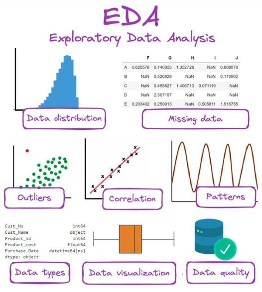
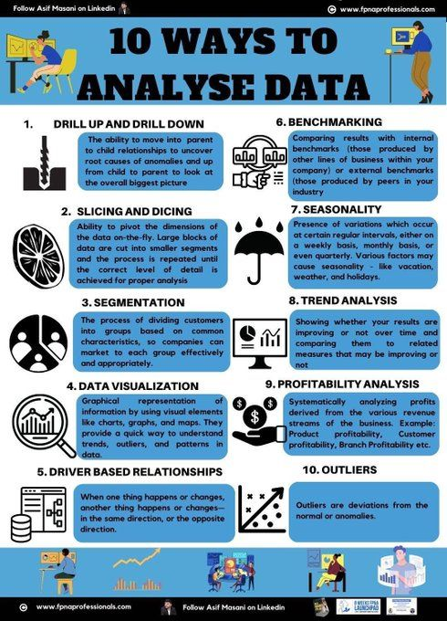
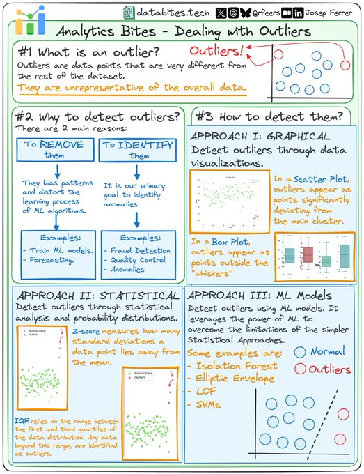
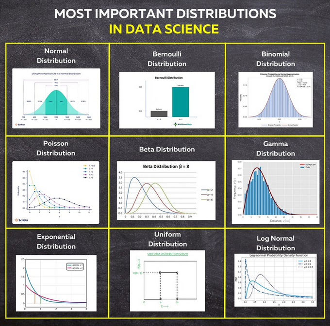
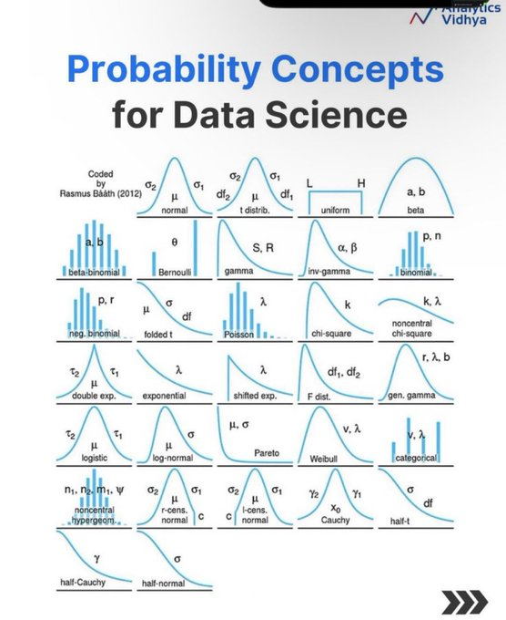
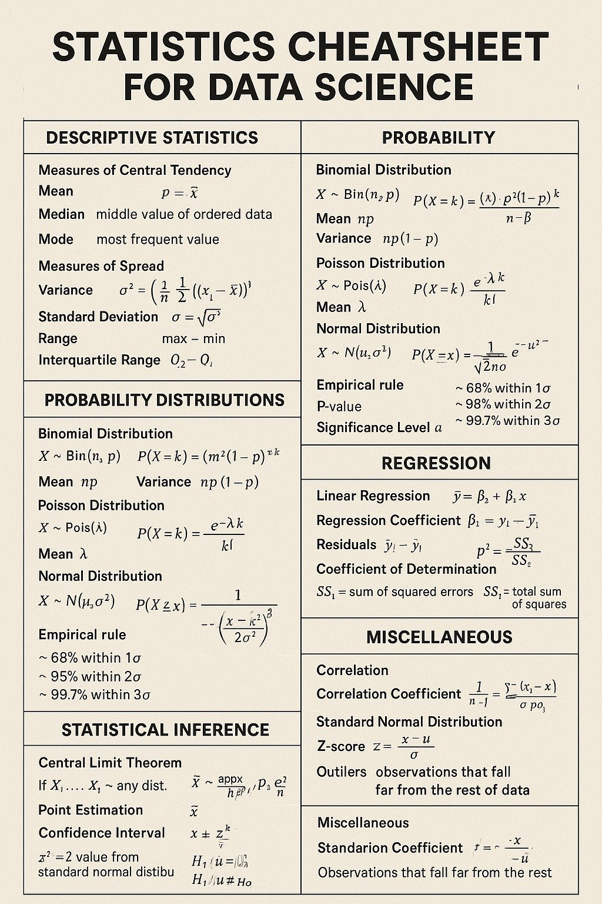
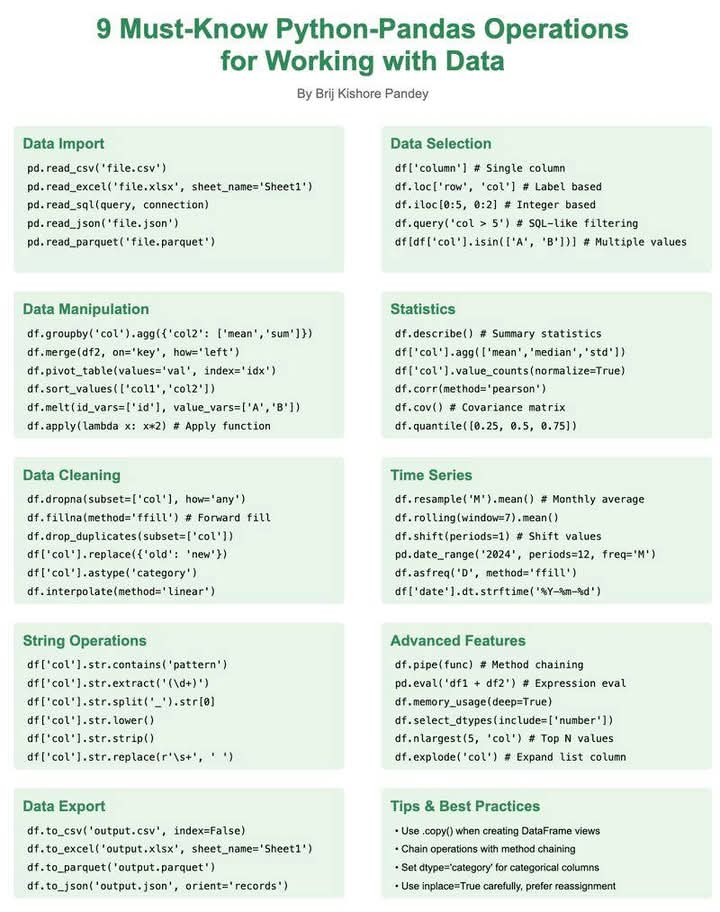

🔍 Exploratory Data Analysis Guide
Interactive learning path for intermediate data analysts
📊 Reference Cheatsheets
Visual guides from the original prompt
| EDA Infographics | |
|---|---|
|  |  |
|  |  |
|  |  |
|  |  |
📋 Original Prompt
Generate an HTML app with JavaScript (no REACT) that provides actionable and clickable guide for "Exploratory Data Analysis" to resources for code snippets, tutorials, descriptions, illustrations for each of these concepts from the graphics. Include information and examples in Python, SQL, R, JavaScript and Excel. Use a clickable tile for each concept and each should have a clickable checkmark that I can use to mark the concept as complete.